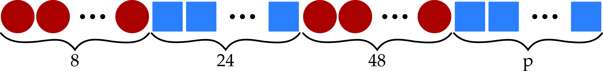

Problem of the Week
Problem D and Solution
Doing Some Beading
Problem
Amir is putting beads on a string. He plans on starting with 8 round beads, then 24 square beads, then 48 round beads, and then \(p\) square beads (where \(p>0\)). At some point after he has put on \(n\) beads (where \(n>0\)), he realizes that on his string there are twice as many beads of one shape than there are of the other shape. Determine the maximum and minimum values of \(p\) that result in exactly 5 possible values of \(n\).
Solution
We can start by drawing a sketch to visualize the problem.

Notice that we must have \(n>8\) because the first 8 beads are round, and we need at least one bead of each shape.
After 8 round beads and 4 square beads, there are twice as many round beads as square beads. So the first value of \(n\) is \(8+4=12\).
After 8 round beads and 16 square beads, there are twice as many square beads as round beads. So the second value of \(n\) is \(8+16=24\).
The next beads are all square, so there are no additional values of \(n\) until we get to the next section of round beads.
After 12 round beads and 24 square beads, there are twice as many square beads as round beads. So the third value of \(n\) is \(12+24=36\).
After 48 round beads and 24 square beads, there are twice as many round beads as square beads. So the fourth value of \(n\) is \(48+24=72\).
The next beads are all round, so there are no additional values of \(n\) until we get to the next section of square beads.
After 56 round beads and 28 square beads, there are twice as many round beads as square beads. So the fifth value of \(n\) is \(56+28=84\). If there are 28 square beads, then \(24+p=28\), so \(p=4\). That means the minimum value of \(p\) is 4.
To figure out the maximum value of \(p\), we need to find the sixth value of \(n\). After 56 round beads and 112 square beads, there are twice as many square beads as round beads. If there are 112 square beads, then \(24+p=112\), so \(p=88\). We want \(p\) to be less than 88 though, because we want only 5 possible values of \(n\). That means the maximum value of \(p\) is 87.
Thus, the minimum value of \(p\) is 4 and the maximum value of \(p\) is 87.